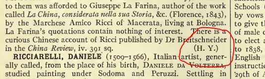

Author Initials
Who wrote it?
Some entries in later editions indicate article authorship by adding the author's initials at the end of the article. These are critical for a later stage in our production process. To make it easier for us to identify author initials, we want them to appear on their own line. Add a line return before them, if necessary. You do not need to do anything to the parentheses surrounding them.
Figure: Typical author initials in eb11
